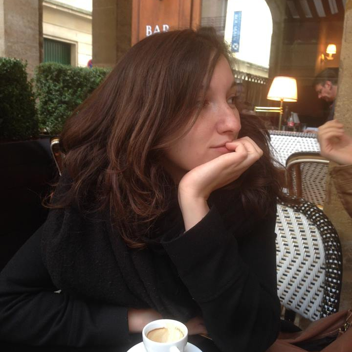

Laure Milian
Développeuse web & mobile
26 ans - Permis B - ToulouseActuellement en formation intensive développement web et mobile à Simplon. J'ai étudié la communication et l'événementiel, j'ai travaillé dans le webmarketing et la gestion de projet web. Polyvalente, curieuse, j'apprends et je m'adapte vite !
Développement web
Gestion de projet
Webmarketing
Communication
Langues
Français
lu, écrit, parlé
Anglais
lu, écrit parlé
Espagnol
notions
LSF
notions
2014-2016
Assistante webmarketing et chargée de projet web
Ctoutvert (agence web) - Toulouse, 14 mois
- SEO : audits techniques et rédaction optimisée
- SEA : paramétrages et suivi de campagnes, reporting
- CRM : suivi de projet clients grands comptes, envoi de newsletters
- Réseaux sociaux : animations hebdomadaires de pages Facebook
- Suivi, analyse de trafic et reporting
2014
Mission de consultation en communication numérique
Institut National Polytechnique - Toulouse, 4 mois
- Audit communication interne et externe
- Préconisations pour optimiser la communication sur les réseaux sociaux
2012
Assistante communication
Mairie - Saint-Sylvain d'Anjou, 3 mois
- Réalisation de supports graphiques (plaquettes, invitations, affichage)
- Mise en page newsletter
2011
Chargée d'événementiel
Collectif des Arts Urbains - Angers, 7 mois
- Réalisation d'une étude de marché et création d'un événement
- Recherche et gestion des relations avec les partenaires et mécènes
- Programmation et organisation de la soirée
- Gestion administrative : fondation de l'association, rémunération artistes...
- Réalisation et diffusion des supports de communication
- Relations presse (rédaction dossier et communiqués, relances, interview)
2011
Rédactrice web
Le Scéno (agenda culturel) - Angers, 7 mois
- Rédactions de brèves
- Mises à jour du site web
2011
Assistante communication
Festival Terres du Son - Tours, 2 mois
- Gestion des offres aux comités d'entreprises
- Gestion des relations presse
- Rédaction de contenu pour le site web
- Organisation d'un plan de diffusion (recherche de prestataires)
2010
Journaliste radio et rédactrice web
Radio Campus - Angers, 9 mois
- Rédaction d'articles pour le site web
- Réalisation de micros-trottoirs et courts reportages
2010
Assistante communication
Théâtre du Tiroir - Laval, 1 mois
- Recherche de lieux de diffusion pour une pièce
- Réalisation de communiqués et dossiers de presse
- Gestion des artistes en résidence et des réservations
2016
Développement web et mobile
Simplon.co - Toulouse, 6 mois
- Front-end : HTML, CSS, Javascript
- Back-end : Node.js, PHP, Javascript
- Méthodes Agile
- Développement mobile
- Voir le programme de formation
2015
Master 2 Communication Numérique
Toulouse 3 UPS - Toulouse - Mention Assez Bien
- Mémoire : "Quel avenir pour le métier de référenceur web ?"
- Stratégie : établir un diagnostic et proposer un plan de communication
- Graphisme : réalisation d'une plaquette et d'une maquette de site web
- Web : Wordpress, rédaction web et techniques de référencement naturel
- Médias : veille et analyse d'un sujet de controverse
2014
Master 1 Information et Communication
Toulouse 3 UPS - Toulouse - Mention Assez Bien
- Mémoire : "Les plateformes de financement participatif sans contreparties financières : quels enjeux pour les porteurs de projets culturels ?"
- Diagnostic et plan de communication pour une association locale
- Rédaction d'un cahier des charges de refonte de site web
2012
Licence Information et Communication
UCO - Angers - Mention Bien
- Spécialisation événementiel
- PAO : réalisation de plaquette, mise en page de magazine, impression
- HTML/CSS : réalisation d'un site web statique
2009
1ère année de Bachelor Commerce International
Sup de Co - La Rochelle
- Initiation au marketing, au management, à la comptabilité, aux RH...
- Engagement associatif au sein du pôle communication du Bureau des Arts